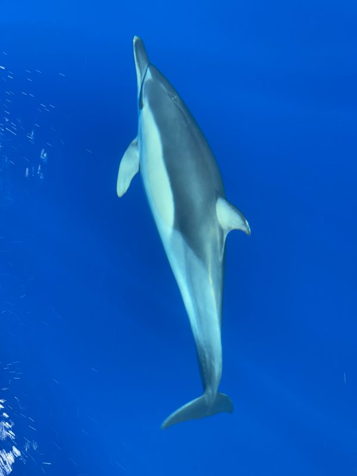
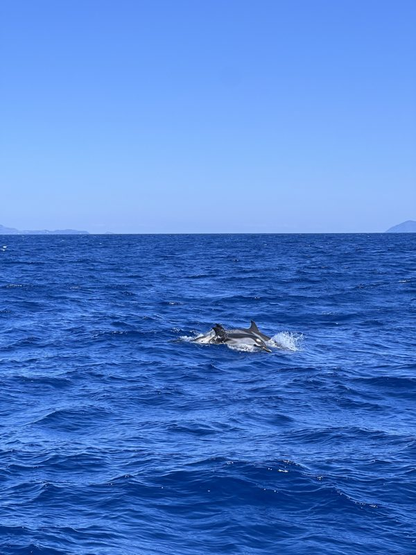
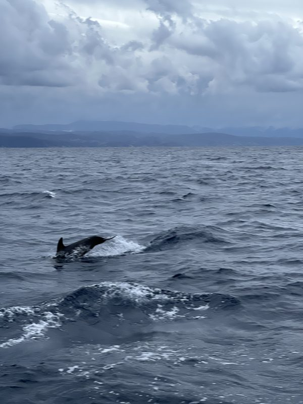
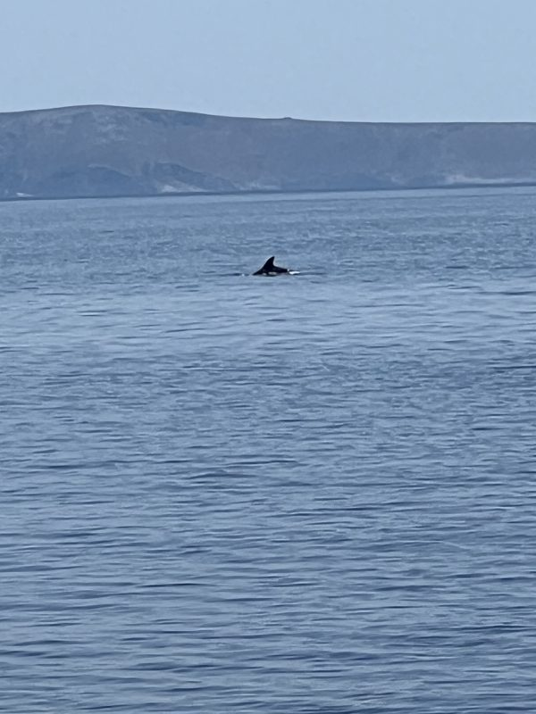
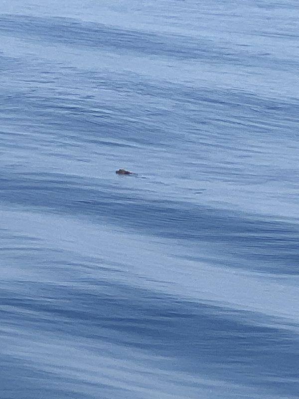

Hvad vi har mødt ude på vandet, sejlads efter sejlads — mest delfiner, og en enkelt vi ikke er sikre på. Hvert møde er noteret med dato og position fra billedernes GPS.
Fire delfinmøder mellem 2021 og 2024 — fra Kykladerne i syd til det nordlige Ægæerhav. Klik en markør for dato og billeder.
Delfiner følger ofte med båden et stykke — i bovbølgen, eller bare på vej forbi. Her er de fire gange vi nåede at få dem på billede. Klik på et møde for at se hele serien.





Én gang så vi noget bryde overfladen — et lille mørkt hoved, væk igen før kameraet fangede det skarpt. Måske en skildpadde. Måske ikke.
Havskildpadder er svære at få øje på fra en sejlbåd: de er kun oppe at trække vejret i få sekunder, ligner et stykke drivtømmer på afstand, og er forsvundet inden man har stillet skarpt. Tre arter lever i Middelhavet, og alle tre kan i princippet ses i græske farvande:
Kilde: ARCHELON — Sea Turtle Protection Society of Greece.